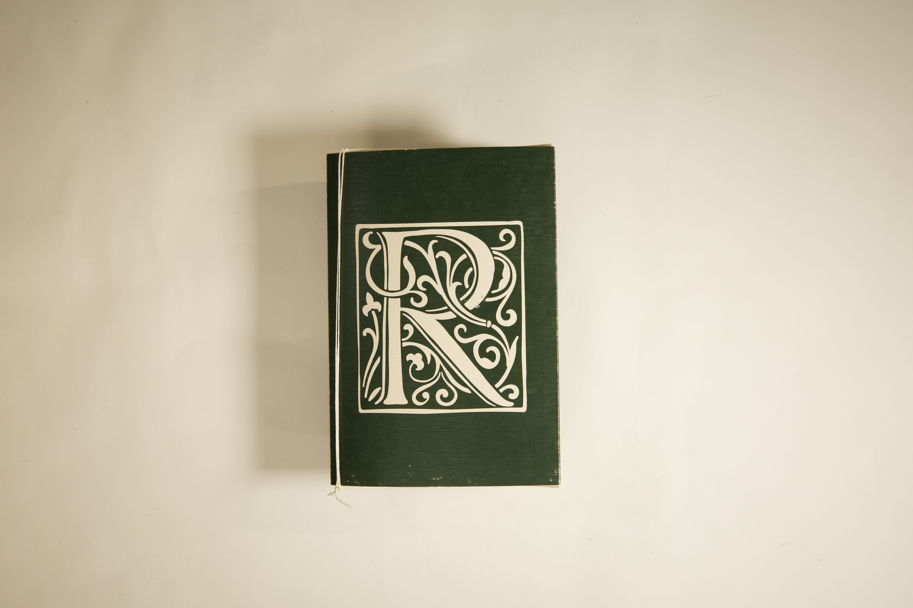

LETERNO RITORNELLO
Questo progetto esplora i temi del ritmo e della tipografia attraverso un artefatto concettuale presentato nella forma di una Bibbia. Il ritmo, inteso come forza invisibile ma fondamentale che struttura ogni aspetto della realtà, viene reinterpretato come un’entità divina. La tipografia diventa il linguaggio sacro attraverso cui questo ritmo si manifesta e viene trasmesso. Adottando la struttura e il tono di un testo religioso, il progetto gioca con solennità e ironia, costruendo una narrazione stratificata che al tempo stesso omaggia e mette in discussione le forme tradizionali.
All’interno di questa scrittura fittizia, il Ritmo assume il ruolo di Dio, principio originario dell’universo. Gesù è rappresentato come un tipografo, incaricato di diffondere la parola attraverso l’arte tipografica. Mosè incarna l’Ordine, mentre ciascun apostolo rappresenta una diversa disciplina artistica attraverso cui il ritmo si esprime.
L’impaginazione segue un layout classico di una bibbia per le pagine di pura trama, mentre diventa tipografia espressiva nelle pagine dedicate ai vangeli. Ogni vangelo racconta la storia di una disciplina legata al ritmo.
Il risultato è una reinterpretazione ironica e ludica della narrazione sacra, in cui progetto, testo e concetto convergono per esplorare il ritmo come origine di ogni creazione.
